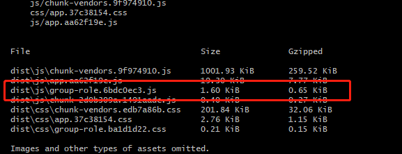

前端性能学习记录：
路由懒加载
结合 Vue 的异步组件和 Webpack 的代码分割功能，轻松实现路由组件的懒加载。
在 router.js 中，原来导入组件的方式是：
1 | import Home from './views/Home.vue' |
这就导致这些组件最后都打包到一个 app.653b22c5.js 文件中，我们修改导入组件的方式，改为动态导入：
1 | const Home = () => import('./views/Home.vue') |
但是，如果拆分的粒度过细，也会造成更多的网络资源请求，对网站加载造成影响。
其实我们的一个功能流程通常会涉及多个页面，如果能将多个页面组件分组打包，效果会更好，避免了多次网络资源请求。
路由懒加载分组
分组修改方法如下：
1 | const Home = () => import(/* webpackChunkName: "group-role" */'./views/Home.vue') |
组件分组后：

按需加载
chunk-vendors.js 是对 node_modules 中三方库的打包，按需加载可减少文件大小。
如果使用echarts时，按需加载：1
2
3
4
5
6
7
8
9
10
11
12
13
14
15
16
17
18
19
20
21
22// 引入echarts核心库和折线图
let echarts = require('echarts/lib/echarts');
require('echarts/lib/chart/bar');
require('echarts/lib/chart/pie');
// require('echarts/lib/chart/funnel');
require('echarts/lib/chart/line');
require('echarts/lib/chart/gauge');
require('echarts/lib/chart/radar');
// 引入提示框和标题组件和注释
require('echarts/lib/component/tooltip');
require('echarts/lib/component/title');
require('echarts/lib/component/legend');
require('echarts/lib/component/dataZoom');
export default {
install(V) {
/* eslint no-param-reassign: 0 */
V.prototype.$ec = echarts;
}
};
export { echarts };
gizp压缩
如果 Nginx 服务器开启 gzip，会将静态资源在服务端进行压缩，压缩包传输给浏览器后，浏览器再进行解压使用，这大大提高了网络传输的效率，尤其对 js，css 这类文本的压缩，效果很明显。
以下是 Nginx 开启 gzip 的配置：
1 | # 开启|关闭 gzip。 |
如果 Nginx 没有开启 gzip，前端在打包的时候可以打包出一份资源的压缩版本，Nginx 也会把压缩文件传输给浏览器。
首先安装一个插件：
1 | npm i -D compression-webpack-plugin |
在 vue.config.js 中配置下这个插件:
1 | const CompressionPlugin = require("compression-webpack-plugin") |
nginx 服务器还要做一下简单配置:
1 | gzip_static on; |
配置成功后，重新将代码部署到 nginx，重新载入 nginx 配置。
Vuex 动态注册模块
vuex 通常使用静态模块，这些模块都会打包到 app.js 中，但是如果有的模块过大而且不是立刻就会用到，我们可以动态的注册模块到 vuex 中。
在使用 vuex 某个模块的时候才注册：
1 | mounted () { |
在不使用的时候，注销模块1
2
3beforeDestroy () {
this.$store.unregisterModule('myModule')
}
这样实现的效果是该页面在加载时才下载模块内容，而不是刚访问网站就去下载。